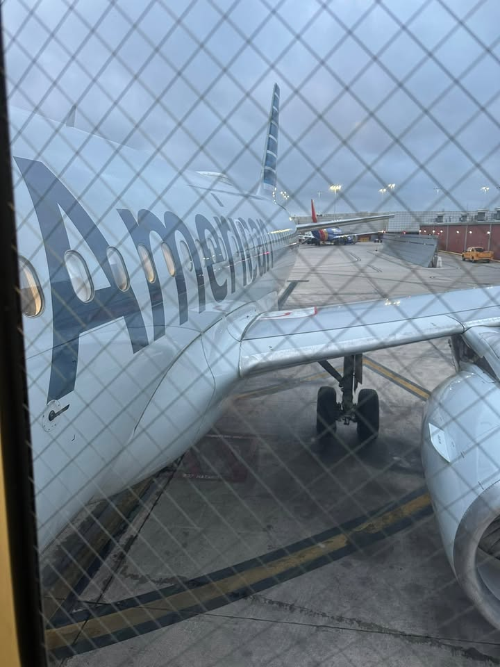
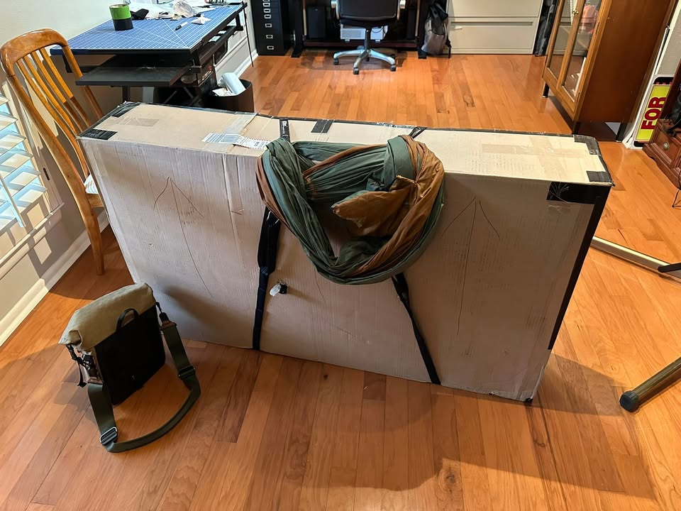
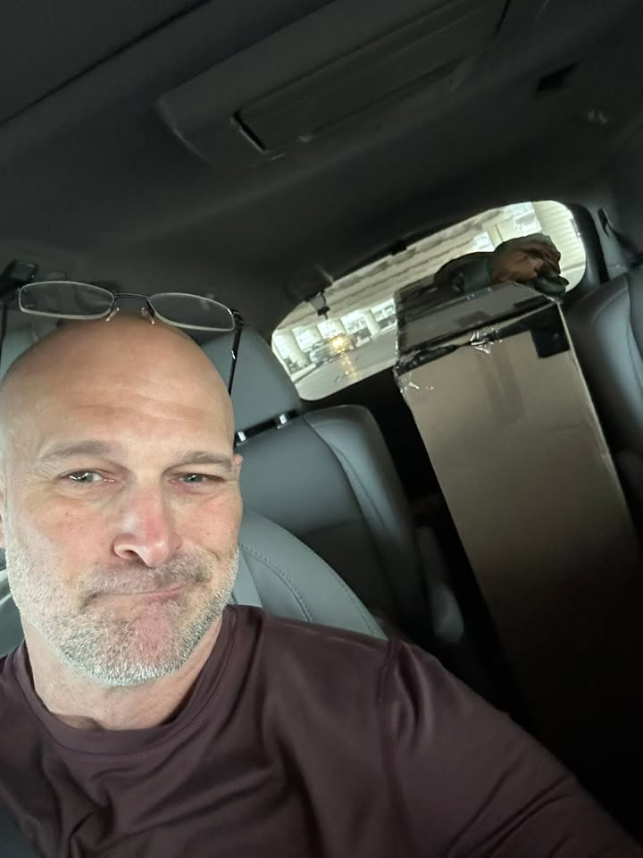
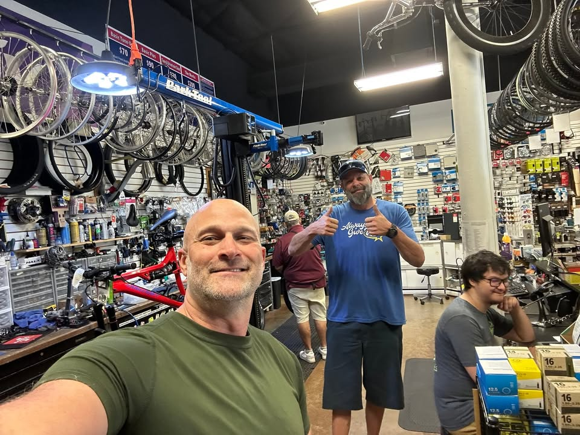

With an early wake-up and a cup of coffee, I make my way to the airport for my 7 o’clock flight, which ended before it even started—I just didn’t know it yet.

From the Journey
I devised an ingenious way to carry my bicycle box, an oversized monstrosity weighing 75 pounds. With the help of my luxury item for the trip—a hammock—I managed to strap it securely and use the hammock as an over-the-shoulder carrier. This worked amazingly well!
After grabbing some coffee and getting on my flight without much of a problem, I started chatting with the guy next to me until the pilot came over the intercom and announced that we would be DE-boarding the plane due to a communication problem.

From the Journey
Initially, I thought they would simply put us all on another plane and take off, but obviously, that’s not how it works. After speaking with the agent, I learned I had two options.
The first option was to fly to Dallas in an hour or two, layover for eight hours before flying into Calgary and arriving at 9 o’clock at night. This would mean missing my bus to Banff and sleeping in the Calgary airport, waiting for the early bus in the morning. Or I could book the whole trip for tomorrow. Either way, I would miss the hotel/hostel stay I had reserved in Banff.

From the Journey
Luckily, I chose the second option. After picking my bike up at baggage claim I noticed that my bike box had sustained quite a bit of damage, with the hubs breaking through and poking out of the box.
With the extra day on my hands and this potential critical failure, I decided to take a friendly trip down to my bike mechanic for a quick inspection. He said it would have been okay. Then he, very professionally, hammered rings back in place properly.

From the Journey
If you’re in San Antonio and looking for a new bike, I highly recommend Ride Away Bikes. Their customer service is excellent, and they have a couple of locations in the area, though I believe they’re relocating one of them. I also think they’re a chain. So you could get help anywhere.
The owner in San Antonio went above and beyond for me, and my bike mechanic, Brad, has been phenomenal. Without Brad, I wouldn’t have been able to put this new bike together so quickly with all the pieces I wanted for the exact rides I enjoy—off-road touring, it turns out. Thank you, Brad!!
Well, I’ll try again tomorrow!